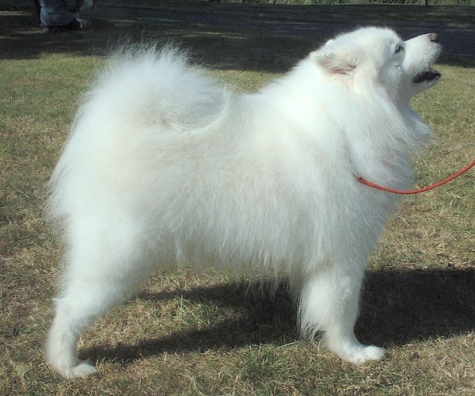
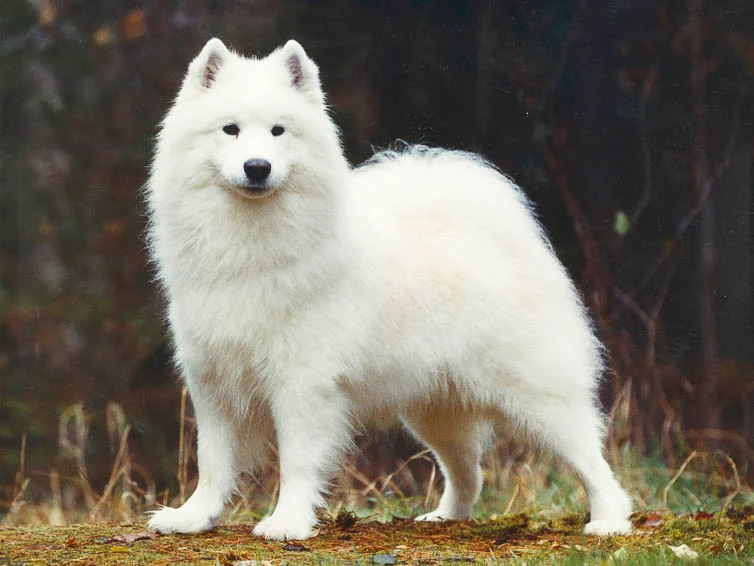
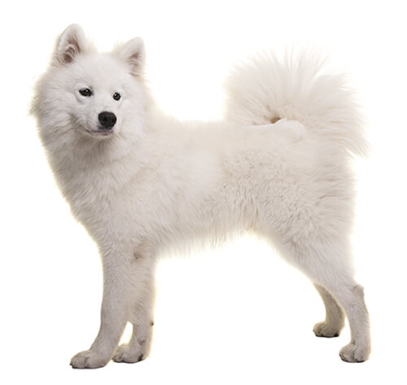

Historik
Samojedhunden
Samojedhunden härstammar från ett nomadfolk i Sibirien och är en av världens äldsta hundraser. Den användes ursprungligen av samojederna för draghundsarbete, jakt och vallning, men också som värmande sällskap. Samojedens historia är starkt kopplad till livet i de arktiska områdena i norra Ryssland och Sibirien. Där levde hundarna nära människor och hade många olika uppgifter i vardagen. De kunde användas för att dra slädar över långa sträckor, vakta och hjälpa till med renhjordar samt följa med på jakt. Hundarnas styrka och uthållighet gjorde dem särskilt värdefulla i ett klimat där vintrarna var långa och mycket kalla.
Ursprung
Samojedhunden har fått sitt namn från samojederna, vilket är ett nomadfolk som levde i Sibirien. Hundarna användes under lång tid som arbetshundar och hjälpte människorna i det kalla klimatet. När samojeden senare började spridas till andra delar av världen blev den uppskattad både för sitt utseende och sina bruksegenskaper. Rasen behöll sin styrka, uthållighet och arbetsvilja, men blev samtidigt en populär familjehund. Samojedens täta päls, upprättstående öron och karakteristiska leende är idag några av rasens mest igenkännbara kännetecken. Trots att samojeden idag ofta hålls som sällskapshund finns många av de ursprungliga egenskaperna fortfarande kvar. Rasen har vanligtvis ett stort behov av motion och mental stimulans och trivs ofta bra med aktiviteter som drag, vandring och olika former av hundsport.

Fakta:
Ursprung: Sibirien
Typiska uppgifter: Drag, jakt, vallning
Vikt:
- Hanar 19–35 kg
- Tikar 17–28 kg
Temperament: Stabil, social


Jakten var på allt från ripa till björn, och blev dessutom använd som vallhund när ren samt som dragdjur. Ett så brett användningsområde kräver ett mycket stabilt temperament. Samojedhunden har en lång historia som arbetande hund i mycket krävande klimat. De användes inte bara för att dra slädar och vakta renar, utan även som jakthundar och som värmande sällskap under kalla nätter. Det nära samarbetet med människor bidrog till att rasen utvecklade ett socialt och vänligt temperament.
Samojeden anses ha ett mycket gott temperament och är känd för att vara social, intelligent och arbetsvillig. Rasen har under lång tid använts både som sällskapshund och arbetande hund.
Hundarna blev värdesatta efter sina bruksegenskaper och inte efter färg, ögonfärg eller andra mindre viktiga egenskaper.
Samojedens egenskaper
- Social
- Aktiv
- Intelligent
- Arbetsvillig
- Gullig
- Hårig